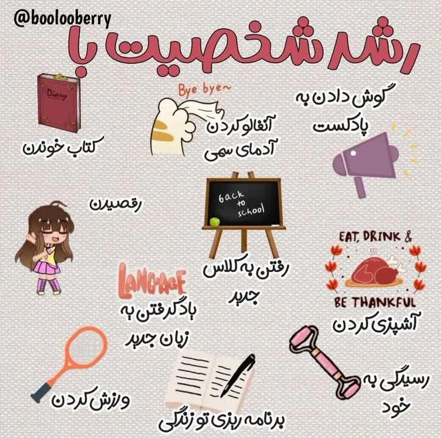
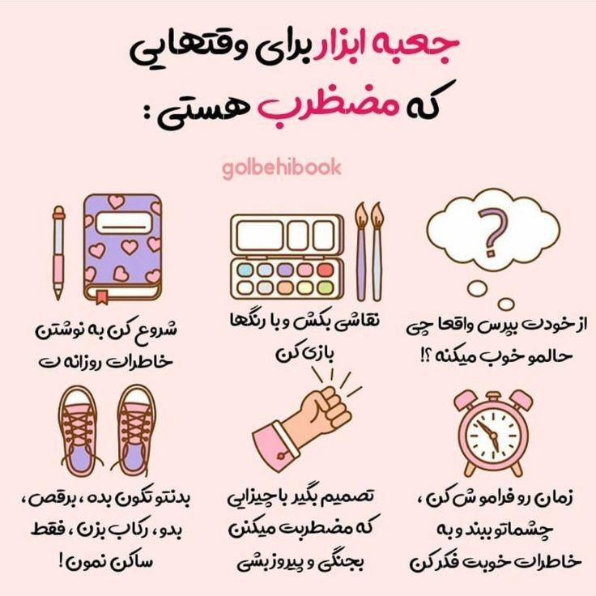
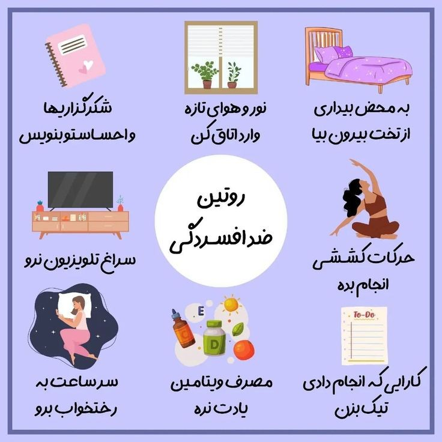
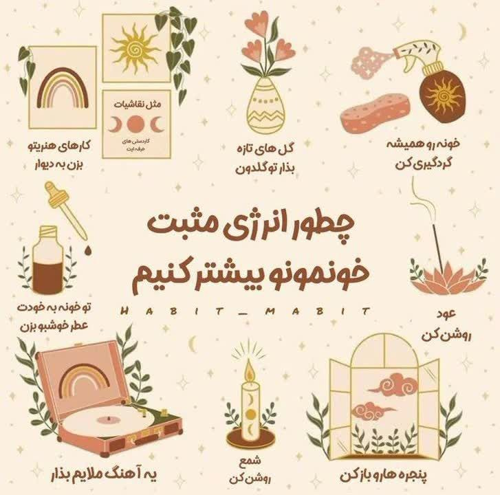
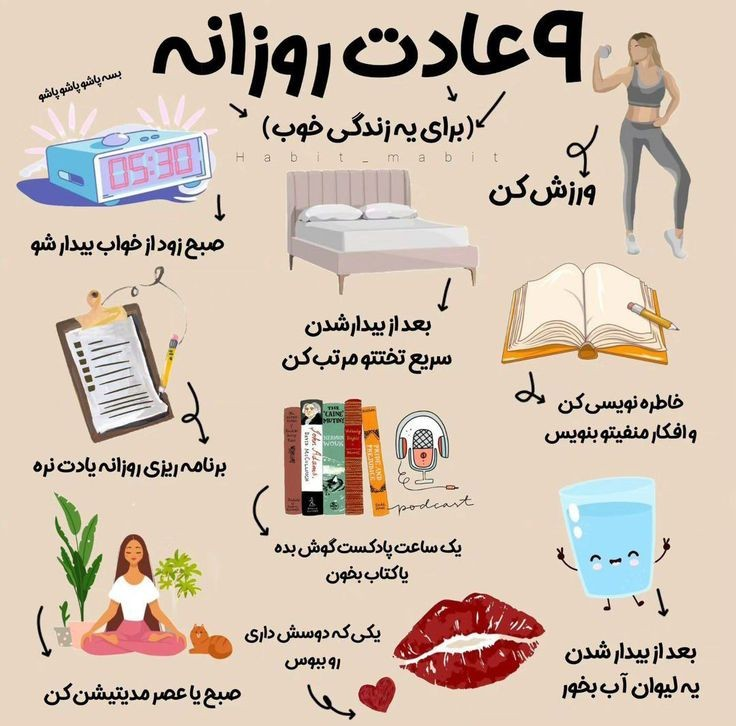
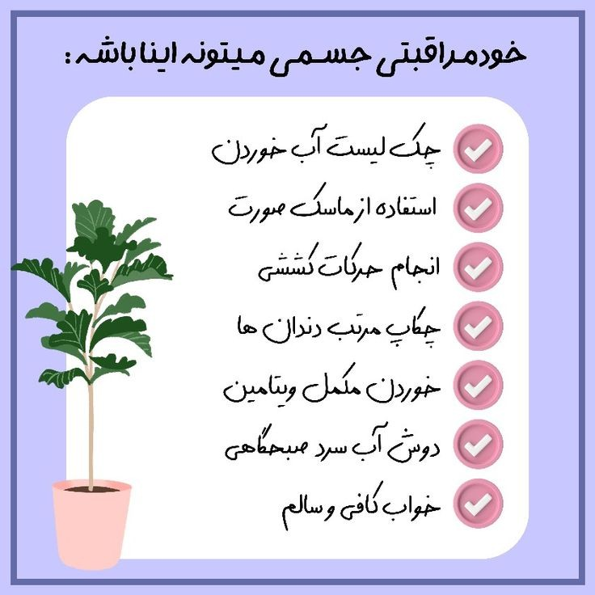
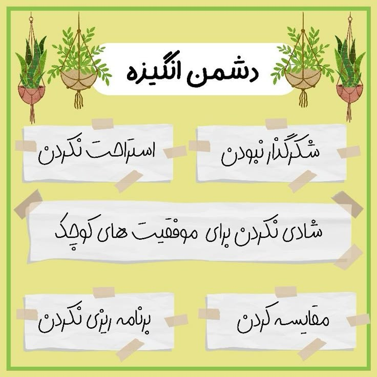
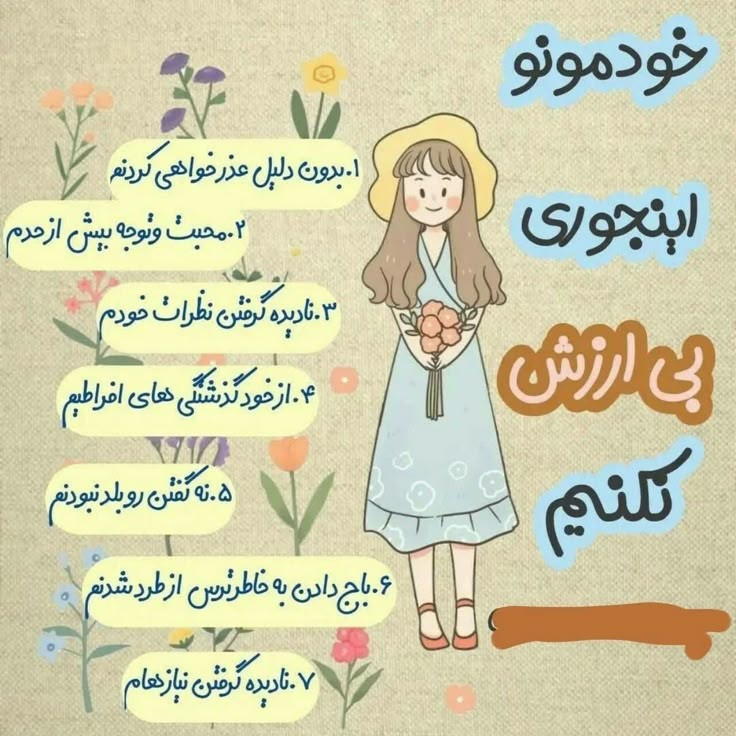
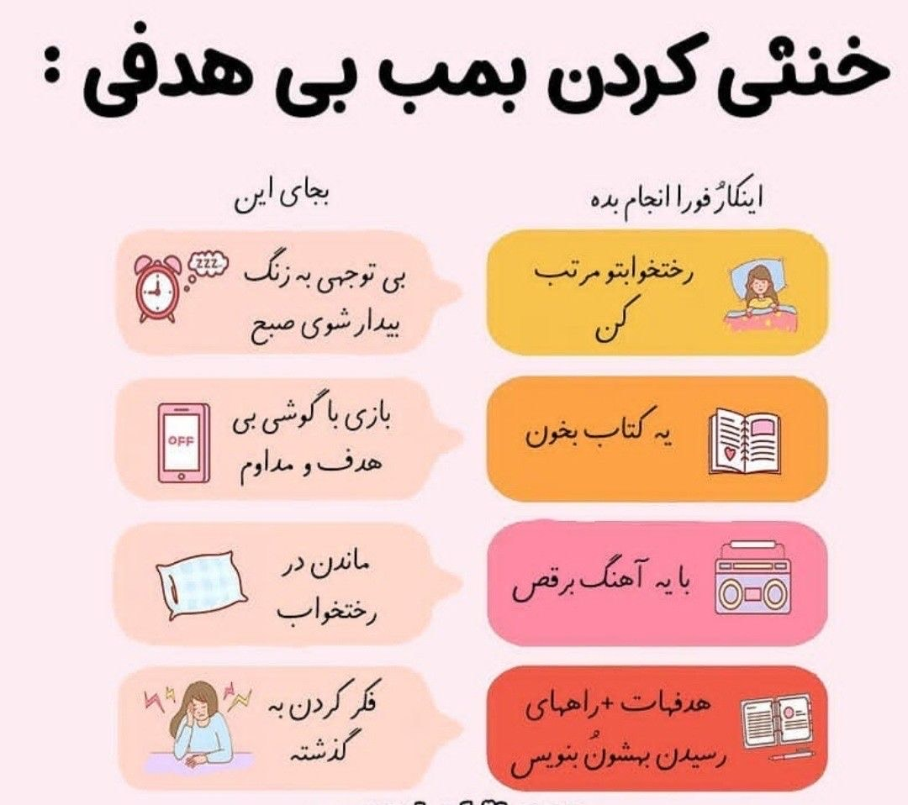

با انجام این ۹کار جایگاهتون رو بالاتر ببرید:
۱.از خودتون بودن خجالت نکشید
۲.انتظاراتتون از خودتون بالا و از بقیه پایین بیارید
۳.هیچگاه طرز فکرتون رو به خاطر اینکه شبیه دیگران باشید عوض نکنید
۴.به خودتان ایمان داشته باشید
۵.در لحظه زندگی کنید
۶.نه گفتن رو یادبگیرید
۷.کاری رو انجام بدید که از ته قلب به درست بودنش ایمان دارید
۸.ازمتفاوت بودن نترسید
۹.تو جامعه با افراد با احترام و محبت برخوردکنید.
چه کسانی رو باید از زندگیمون حذف کنیم:
①کسانی که باعث میشن حس بدی نسبت به خودمون داشته باشیم.
②کسانی که به خط قرمزاهامون احترام نمیذارن.!
③کسانی که دیگران تخریب میکنن تا خودشون خوب نشون بدن*
④کسانی که نمیتوانن موفقیت دیگران ببینند...
چطوری از ذهنمون مراقبت کنیم؟
با غذای روح مناسب :
• کتاب خوب
• موزیک الهام بخش
• پادکست مفید
با پاکسازی به موقع :
• نوشتن افکار
• ورزش و فعالیت بدنی
• صحبت با دوست خوب
• تنفس عمیق
با تعلیم و تمرین درست :
• مدیتیشن
• ساخت عادات جدید
• تمرین نه گفتن
• ترک عادات بد
• کارهای خلاقانه
تکنیک های آرام سازی سریع:
نوشتن احساسات
گوش دادن به آهنگ ملایم
تمرین تنفس عمیق
قدم زدن و پیاده روی .



چرا بعضیا با کوچکترین مسائل ناراحت میشن؟
شاید مسائلی که به نظر شما کوچیک هستن واسه اونا بزرگ و با ارزش باشند.
ممکنه مدت زیادی تحت آزار روانی قرار گرفته باشند و در موقعیت های اجتماعی بسیار حساس تر از دیگران باشند.
مدت بسیار زیادی احساساتشون رو سرکوب کردن و دیگه ظرفیتی برای نگه داشتنشون ندارند به همین خاطر سریع واکنش نشون میدن.
مدت زیادی همه چیز در زندگیشون درست پیش نرفته و امید زیادی دارن که دیگه همه چیز خوب پیش بره ،
به همین خاطر با کوچکترین مشکلی به هم میریزن و گذشته براشون یادآوری میشه…
به سادگی آدما رو قضاوت نکنیم.
علائم وابستگی ناسالم :
● مداوم نگران این هستید
که بقیه شما رو ترک کنند تنها بمونید
● تو رابطه ای که تموم شده باقی مانده اید
برای اطرافیانتون بیش از اندازه احساس مسئولیت می کنید
● برای اینکه ازخودتون رضایت داشته باشید همش مشغول راضی کردن دیگران هستید
احساس خود کم بینی و قربانی بودن دارید
استرس داری انجامش بده:
پیاده روی هرروز یا ورزش هر روز
نوشتن روزانه
انجام کار های هنری
صحبت کردن با دوستانتان
تنفس هر روزه



شجاعت میتونه این موارد باشه:
_پایان دادن به یه رابطه سمی
_نه گفتن به چیزی که دوست نداریم
_بلند شدن از تخت خواب بعد از جنگ با افسردگی
_عذرخواهی کردن بعد از یه اشتباه
_بخشیدن خودمون
_شروع دوباره بعد از یه شکست و ضربه سنگین
_شروع کردن راه های جدید
چرا احساس خوشبختی نمیکنیم؟
-انتظارات غیرواقعی برای خود انتخاب می کنیم
-فکر می کنیم دیگران خاص هستند اما دلیل آن را نمیدانیم
-خوشبختی را با واحدهای اشتباه میسنجیم
-عادت کرده ایم فقط داشته هایی که دیگران بیشتر دارند را ببینیم
-بدنبودن را با خوب بودن اشتباه گرفته ایم
-امیدواریم دیگران ما را خوشبخت کنند
-به دنبال ترحم هستیم
-فکر میکنیم پس از خوشبختی بدبختی می آید
-تاثیر تلاش دیگران درخوشبختیشان رو نمیبینیم



مسیر واقعی موفقیت :
-ایده
-برنامه ریزی
-اجرا
-شک به خود
-شک به شکست
-برخورد به مانع
-افسرده شدن
-مثبت موندن
-موفقیت کوچیک و بزرگ
-استمرار
شیش کاری که بهتر کارتو انجام بدی:
۱ اینترنت تا پایان کار قطع کن
۲ هر۴۵ دقیقه یک ربع استراحت کن
۳ کارهای فردا رو حتما لیست کن
۴ کارهای بزرگ تر به مرحله کوچیک تقسیم کن
۵ از کارهای سخت تر شروع کن
۶ صبح زود پاشو
چرا تو رابطه هات صدمه میبینی؟
* چون به افرادی دل میبندی که از تو گریزونن
* چون به افرادی توجه میکنی که هیچ توجهی بهت ندارن
* چون برای کسایی وقت داری که اصلا در دسترس نیستن
* چون باج میدی که به هر قیمتی دوستت داشته باشن
* چون احساس بی ارزشی می کنی و بودن در رابطه اشتباه رو به تنهایی ترجیح میدی
* چون میترسی، ترس از دست دادن داری و با کارهات درفت رو فراری میدی
* چون یادت میره دوست داشتنی هستی و هیچ رابطه ای از خودت مهمتر نیست
صبر تنها عصبانی نشدن نیست!
صبر یعنی اینکه قادر باشید ۷ احساس
زیر را در خود کنترل ، مدیریت و مهار کنید.
تنفر
علاقه
لذت
اضطراب
خشم
غم
ترس
اگر بتوانید بروز عکس العمل ناخوشایند در مقابل این هفت احساس را از روان خود بگیرید
و به اندیشه تان مجال تامل بیشتر جهت ابراز عکس العمل خوشایند
در برخورد با آنها بدهید شما آدم صبوری هستید...